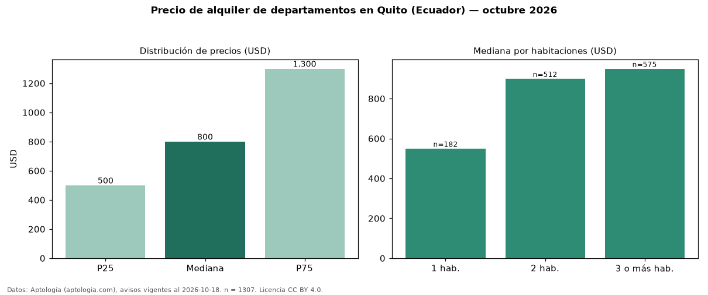

Precio de alquiler de departamentos en Quito (Ecuador) — octubre 2026
Con 1.307 avisos vigentes, el canon mediano de departamentos en alquiler en Quito (Ecuador) es USD 800 al mes. Por metro cuadrado, la mediana es USD 7,22/m² al mes (n = 1167 avisos con área). Por precio mediano es la ciudad 2 de 3 de Ecuador con al menos 30 avisos de departamentos en alquiler (USD). Tiene 3 sectores con al menos 30 avisos de departamentos en alquiler; la más cara es González Suárez (USD 1.700) y la más económica La Carolina (USD 1.030). La mediana de toda la vivienda en alquiler de Quito (USD) es USD 900; los departamentos quedan −11 %. La mitad central de los avisos va de USD 500 a USD 1.300 (razón 2,6), una dispersión alta. El área mediana anunciada es 115 m². El segmento con más oferta es el de 3 o más habitaciones (575 avisos, mediana USD 950); pasar de 1 habitación a 3 o más habitaciones cambia la mediana +73 %. Datos: Aptología (aptologia.com), CC BY 4.0 — https://www.aptologia.com/ec/alquiler/quito. Archivos: PDF, CSV con las cifras y gráfica PNG.

| Avisos únicos | 1307 |
|---|---|
| Percentil 25 | COP 500 |
| Mediana | COP 800 |
| Percentil 75 | COP 1.300 |
| Mediana por m² | COP 7 |
Fuente: avisos vigentes de portales inmobiliarios recopilados por Aptología, deduplicados (mínimo 30 avisos únicos por celda). Precios pedidos, no cerrados. Fecha: 2026-10-18.